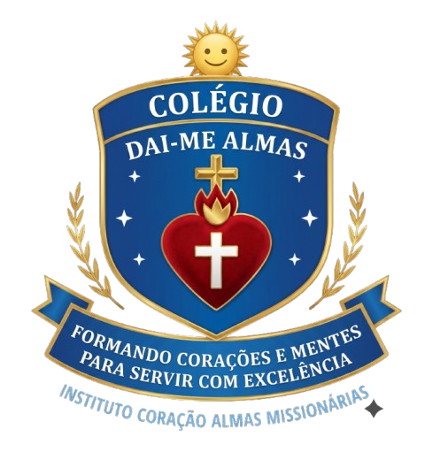

"Formando Corações e Mentes para servir com excelência"
Conheça Nossos Projetos Junte-se a nós nessa missão
O Instituto Coração Almas Missionárias foi criado com o propósito de trabalhar pela formação integral da pessoa humana — desde a educação das crianças até o fortalecimento das famílias. Nosso lema é simples, mas profundo:
Formando corações e mentes para servir com excelência.
O Instituto Coração Almas Missionárias é mais do que uma instituição — é um movimento de fé, amor e esperança.
E o Colégio Católico Dai-me Almas será um lugar onde as crianças aprendem com o coração, as famílias se fortalecem, e Deus é o centro de tudo.
*EVENTOS SUJEITOS À ALTERAÇÕES PRÉVIAS
Acompanhe nossas atividades e eventos
Sua contribuição faz a diferença na vida de muitas crianças e jovens.
Neste ano, queremos ir ainda mais longe. Convidamos você a ser um PATROCINADOR, fazendo parte dessa corrente que leva às crianças não só um presente, mas uma experiência de acolhimento e esperança que ficará marcada em seus corações.
Junte-se a nós nessa missão contribuir na nossa vakinha